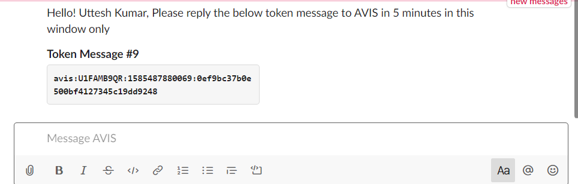
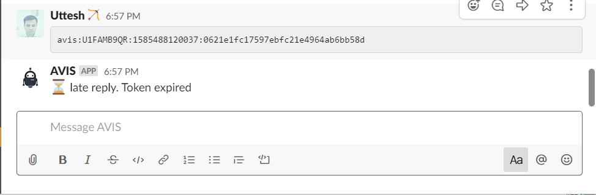

AVIS Bot beta
AVIS Bot beta
This Slack bot app wrote in the 10 hours !! on 28th-29th March 2020 on lockdown days #stayhomehackathon
AVIS bot is an Open Source slack bot written on the #stayhomehackathon, its very simple bot which interacts with the slack user in an interval of time and generates a report on the interaction.
Features
- Monitor the user activity and interaction
- Generate daily reports.
How it works
- AVIS Bot will send the user token on the regular/random interval.
- The user needs to respond the token to the AVIS on the same chat window on the specific interval, default 5 minutes.
- If the user response in the valid time interval, the bot will respond with the successfully received message.
- If the user response after the valid response time, the bot will respond to the "late reply, token expired" message.
- if the user trying to send the old token/invalid token. the bot will respond with the validation error message.
- At the end of the day, the bot will send the report to the dedicated avis_daily_status channel with the report data.
Bot activities
- The bot will send token only in the working hours i.e. morning 9:30 to 6:30 evening.
- The bot will be paused on the lunch break i.e. 1:00 to 2:00
- The bot will be paused on the weekends.
AVIS bot interaction flows:
1.Token send by the AVIS to user and notification


-
Response to the AVIS bot with the token and bot response to a valid token.
-
Bot response to the late reply of the token.

-
Bot response to the invalid/already-submitted Token.

-
Simple daily report to the avis_daily_status channel